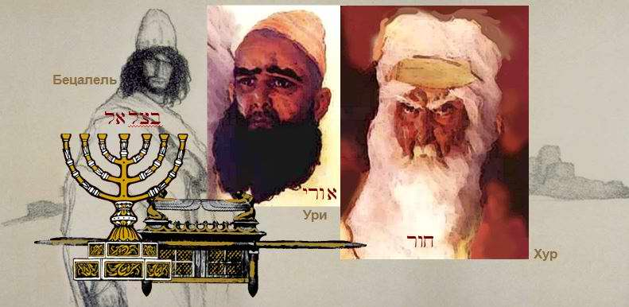
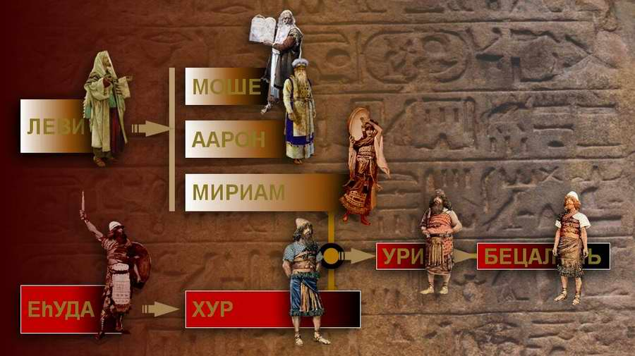
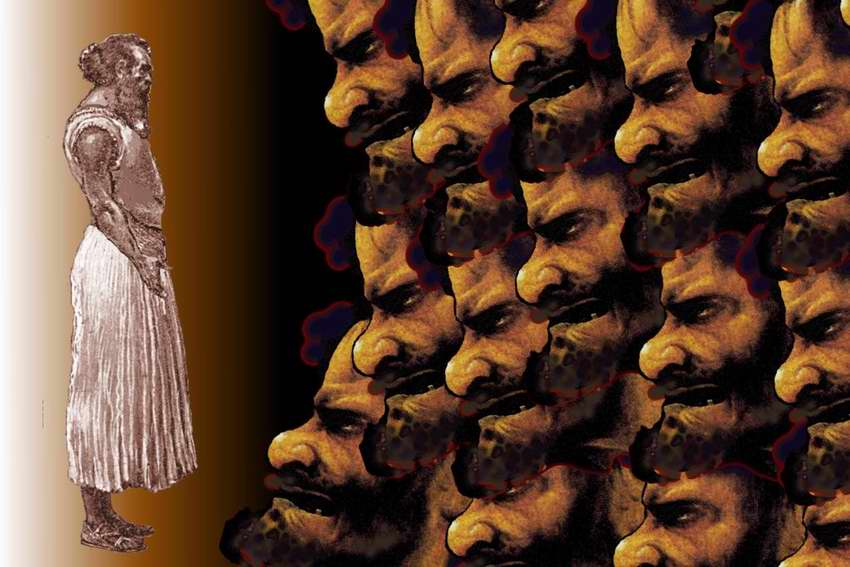
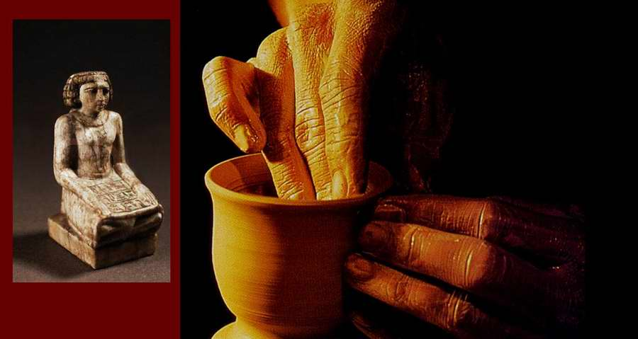
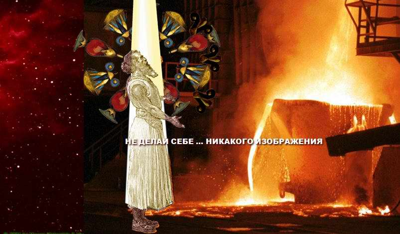
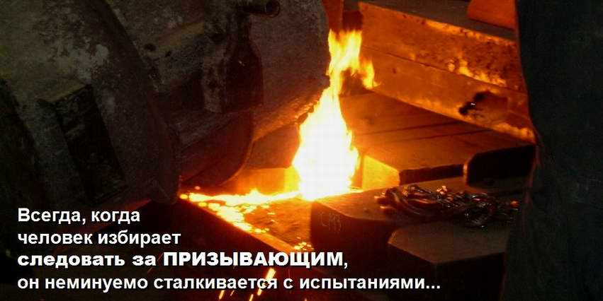

Called to Be Refined. Bezalel
"See, I have called by name Bezalel the son of Uri, the son of Hur, of the tribe of Yehudah…"
רְאֵה קָרָאתִי בְשֵׁם בְּצַלְאֵל בֶּן־אוּרִי בֶן־חוּר לְמַטֵּה יְהוּדָה׃
Exod. 31:2 RE'E KARATI BE-SHEM BETSALEL, BEN URI, BEN HUR, MI-MATE YEHUDA
At first sight it is an ordinary genealogy, of the kind the Torah is full of… But if we notice that the very book we are reading is called in Jewish tradition "Shemot" (Names), we can understand that in our case the names are of decisive importance.
What is unusual here is that God specially points out to Moshe and to all Israel the importance of this genealogy (of the seven times the name of Bezalel is mentioned in the Torah, four give his full genealogy) and of the names that make it up.
Two lines are present in this genealogy.
The first line carries a message contained in the prophetic meaning of the names. The chain of "decoded" names proclaims God's will over Bezalel. This is how his name sounds if we translate the meanings of the names from Hebrew:
ONE WHO DWELLS UNDER THE PROTECTION OF THE MOST HIGH AND IN THE SHADOW OF THE ALMIGHTY, SON OF THE LIGHT OF THE LORD, SON OF PURITY, OF THE LINE OF THOSE WHO GLORIFY GOD.
The second line is the line of the destinies of particular people… Every person, whatever name his parents gave him, keeps freedom of choice, and his free will is not taken from him… But the way the fathers choose to act often determines the future of the children.

The name of Bezalel occurs seven times in the Torah. The abilities God gave him are described in detail, as are the service to which he was called and all that he made with his hands at God's command.
Of Uri, Bezalel's father, we know nothing for certain except that he was Bezalel's father and Hur's son.
But Hur, Bezalel's grandfather, very probably played a large part in Bezalel's growth as a servant of God. Scripture does not give us full information about him, but what we do have says a great deal.
We first meet him in Exod. 17:10–12: Aaron and Hur go up to the top of the hill with Moshe and hold up his hands during the battle with Amalek.
Who is this Hur? And why does he serve Moshe on an equal footing with Aaron? How can we explain that this man is as close to Moshe as Moshe's own brother?
The midrash explains it very simply: Hur really was a close (though not a blood) relative. He was the husband of Moshe's sister, Miriam. Josephus also says that he was the husband of Miriam, the sister of Moses (Antiquities of the Jews, book III, 2:4).

The second time we read of him is when he and Aaron are left in charge of the camp of Israel while Moshe goes up Mount Sinai (Exod. 24:14)…
One might think: not a bad career; he made a strong start, this grandfather Hur, at the age of a hundred. But… if we try to find Hur again on Moshe's return, when in his anger at the people who had bowed down to the golden calf he breaks the tablets… we shall not find the grandfather… He disappears from the pages of Scripture.
What happened? Why does Moshe, on his return, turn all his indignation on his brother Aaron alone? Where is Hur, who had been left in charge together with Aaron? And again the midrash comes to our help: it turns out that Hur was not making a career… He simply made the decision to follow God and stay faithful to Him, and it cost him his life.
So the midrash goes on: when Moshe came down from Mount Sinai, Hur was no longer there… no longer among the living…

It is not hard to imagine the excited crowd, urged on by shouts: "What about him?!… We all stood at the mountain! Did the LORD speak to him alone? And where is he? Up, make us gods, which shall go before us; for as for this Moses, the man that brought us up out of the land of Egypt, we wot not what is become of him" (Exod. 32:1). When the crowd surrounds Aaron and demands that he make them a golden calf, Hur is no longer beside Aaron.
According to tradition, Bezalel's grandfather Hur was killed by the apostates because he refused to do what they demanded.
It was to him that the crowd turned first. He was one of the two left in charge by Moshe, and besides, he was a man who knew the craft of working precious metal. He was probably the head of a dynasty of craftsmen.

Trained in art as early as the time when Yosef ruled in Egypt, some Israelites reached great heights in the goldsmith's craft. As was the custom, they handed their art down from generation to generation, from father to son. Hur was an excellent master. Perhaps many Egyptians preferred his work to that of Egyptian craftsmen. As a great specialist in his field he was highly respected among the Israelites and had everything one needs to have in this life: honour and respect, money and fame, a son and a grandson, to whom he passed on his great treasure, the skill of making unique things of cunning work.
And then fate "laughed" at him: "And it came to pass on the third day in the morning, that there were thunders and lightnings, and a thick cloud upon the mount, and the voice of the trumpet exceeding loud; so that all the people that was in the camp trembled. And Moses brought forth the people out of the camp to meet with God; and they stood at the nether part of the mount. And mount Sinai was altogether on a smoke, because the LORD descended upon it in fire: and the smoke thereof ascended as the smoke of a furnace, and the whole mount quaked greatly. And when the voice of the trumpet sounded long, and waxed louder and louder, Moses spake, and God answered him by a voice" (Exod. 19:16–19).
Yes, the whole people was in shock, but the words of God, addressed as if to him personally, shook Hur: "Thou shalt not make unto thee any graven image, or any likeness…" (Exod. 20:4).

Everything that until that moment had been his pride, the meaning of his life, the source of his success, everything that had given him high standing and respect in society, his abilities, his talent, all of it was suddenly under the strictest prohibition. What he had lived by all his long life, what he had learned from his father and grandfather with great patience and persistence, turned out to be a terrible sin. What can a man feel at such a moment, a man of great age, an old man who has lost everything in an instant? These words thundered in his ears, and he could not help thinking and searching for an answer, as if nothing had happened.
There in Egypt he had heard from his grandfather about the God of the fathers, Avraham, Yitzhak and Yaakov, but now he knew Him personally. And He Himself had spoken to him. After an agonising struggle he made one firm decision: "As for me and my house, we will serve the LORD."
Gathering his whole family, his son with his wives and children, and his grandson Bezalel, who gave him particular joy and hope by his talent and the originality of his work, Hur announced his decision: "I do not know what will happen to me next, but in my heart I have decided to follow God, whatever it costs me. The God of Israel, who never withheld His mercy from our fathers, now that He has revealed Himself to me personally, will not abandon me either.
And if He has said 'no' to my art, then with tears in my eyes, but also with joy in my heart because God Himself has spoken to me, I will say to Him: amen, so be it."
Shock was the feeling that gripped the whole family at that moment. And, as usually happens among Jews, opinions were divided.
Perhaps the son, Uri, chose a "rational", pragmatic position: on the Sabbaths we will serve the LORD, and the six days of the week we will earn our living by our craft. Perhaps he was the one who, at Aaron's request, carried out the "urgent order", the golden calf…
HUR: Before, my whole life was devoted to art. I lived for art, and in you I saw those who would carry on my work, who would reach heights in art that I never reached…
But now something has changed in my heart; a special light of revelation has touched me. I have understood that there is something immeasurably greater than art: the Creator of all… And He Himself has spoken with me…

BEZALEL: And I agree with grandfather. I too felt that something had happened to my heart; I just could not put it into words. Yes, yes, God spoke to me too. He spoke to me personally, as He did to grandfather.
URI: Father… We all stood at the mountain and we all heard the voice, but one cannot take it so literally.
Yes, everyone heard, but Hur made his decision for himself, and very soon it was tested, as gold is tested by smelting.
And when the crowd was killing him, it was not the question of saving himself that filled his mind, but a revelation about his own name. My name, Hur, means pure. "He has refined me; this is simply amazing… The Creator of the universe called me pure from the beginning, and He has done it, as gold is refined by fire. He has weighed me and found me heavy, as gold is heavy" (KAVED, heavy, and KAVOD, glory, share one root in Hebrew). The old man did, after all, make the "career" of his life: he made the ascent.
And his grandson Bezalel followed his grandfather in his decision, or rather followed the God of Israel. Then, in spite of fear and uncertainty, he stood firm in his decision and laid it deep in his heart: "I will follow the LORD, as my grandfather followed Him, even unto death."
It was a terrible trial for the young man, who witnessed the dreadful scene of his own grandfather being murdered by a crowd angered by Hur's refusal. It was an agonising trial for Bezalel the artist, full of creative plans and prospects, who nevertheless made the decision to leave everything for the word of the God of Israel.
It was precisely this decision, tested by trial, to follow what was proclaimed in his name, "Be-tsel El" (in the shadow of God), to follow the Creator wherever He might call him, that allowed God to say before Moshe and all Israel: "See, I have called by name Bezalel the son of Uri, the son of Hur, of the tribe of Yehudah…"

This very decision made Bezalel an artist called by the Creator to create according to His will and for His glory.
"30 And Moses said unto the children of Israel, See, the LORD hath called by name Bezalel the son of Uri, the son of Hur, of the tribe of Yehudah; 31 And he hath filled him with the spirit of God, in wisdom, in understanding, and in knowledge, and in all manner of workmanship (temple, mishkan, universe)… 34 And he hath put in his heart that he may teach…" (Exod. 35:30–35)
See also the series "Bezalel, Son of Light":
BEZALEL, SON OF LIGHT. The Calling (part I)
BEZALEL, SON OF LIGHT. Under the Shelter of the Most High (part II)
BEZALEL, SON OF LIGHT. The Light of the LORD (part III)
BEZALEL, SON OF LIGHT. Grandfather HUR (part IV)
BEZALEL, SON OF LIGHT. One Who Glorifies God (part V)
This article by Ephraim Kalish has been revised and expanded by the author. (It was first published on the site levit1144.ru.)
Author: Ephraim Kalish / Torah-Art